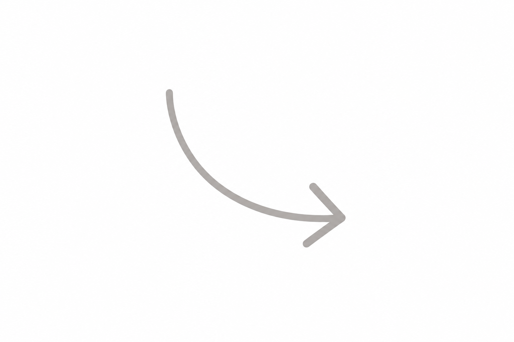

Criadora de Conteúdo UGC
Tati Ribeiro
Vídeos • Fotos • Conteúdo para marcas


conteúdo que faz
sentido na vida real
ideias
rotina
conexão
Entre a teoria e a prática, existe a vida real.


Campinas/SP
34 anos
Nutricionista
UGC
Já criei conteúdos para marcas como: Azulim • Astra Fit • CRF Pilates • Miss Plus Ateliê.
Conheça meu trabalhoEntre a teoria e a prática, existe a vida real.
Portfólio
Trabalhos por nicho, em vídeo e em foto
Vídeos organizados por nicho logo abaixo. A galeria completa de fotos vem na sequência.
Fotos por nicho
Serviços
Como posso ajudar a sua marca
Conteúdo feito para se conectar com quem consome. Pensado para redes sociais e campanhas, com agilidade e direção criativa profissional.
Meu processo
Da rotina ao roteiro
Investimento
Todos os pacotes incluem
Adicionais
Contato
Bora contar essa história?
Me conta sobre o seu produto e a sua campanha. Respondo rapidinho e já envio uma proposta sob medida.